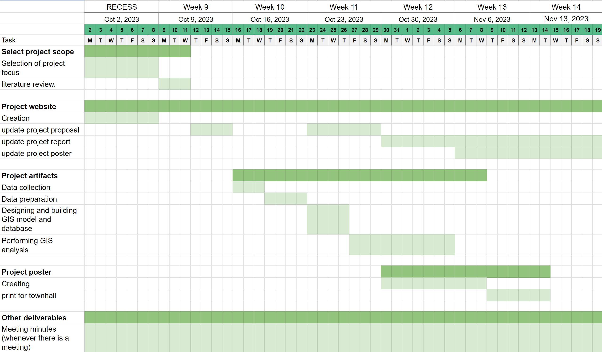

Project Proposal
Motivation of the project
Tropical-like cyclones typically occur once a year in the Mediterranean. This year’s (2023) storm, named Storm Daniel, is the deadliest seen. Derna, a city in Libya was significantly affected by the storm as the Storm resulted in the collapse of two dams, resulting in a flood. The flood washed people out to sea and led to the displacement of around 40,000 people (according to estimates by the UN International Organization of Migration). There were also major impacts infrastructure wise; entire neighbourhoods were swept out to sea, roads were destroyed, and over 3,100 buildings were destroyed (as per estimates by United Nations satellite centre indicate that around)
Due to the difficulty of accessing on the ground data in areas without established on-the-ground sensing infrastructure, satellite data is the main source of data for post-flood management and planning. Satellite data can be used for land use/ land cover change detection which is useful for analysing the impact of the flood on different areas and better planning cities to be more disaster resistant in the future.
Project objective
The project would investigate changes in land use/ land cover after the flooding of Derna City in Libya on 10 September 2023, due to Storm Daniel and the collapse of the dam. Appropriate methods to conduct land classification will be used to classify land use/ land cover before and after the storm respectively. With the analysis, the extent of damage caused by the flood can be estimated, quantified and delineated for mitigation and prevention of future flooding.
Data
For this project, satellite data for Derna City will be sourced from Opernicus Open Access Hub and OpenAerialMap. Satellite data from 7 September and 12 September 2023 will be used to investigate the changes.
Other data that will be used also includes:
OSM Libya from Geofabrik
Libya Floods from Humanitarian Data Exchange portal
Scope of work
The project will involve:
performing supervised classification of the pre-flood satellite data and post-flood satellite data using different algorithms, evaluation of the chosen algorithms’ classification, and the selection of an appropriate algorithm for the final analysis.
Land use/ land cover change analysis - through running an algorithm that detects the land use/land cover change by class
Analysis of change - by observing patterns in the land use/land cover change
Division of work
| Work | Assigned to |
|---|---|
| Land use/ land cover classification | Pre flood: Wei Ni Post flood: Xin Yi |
| Land use/ land cover change analysis | Wei Ni & Xin Yi |
| Analysis of change | Wei Ni & Xin Yi |
Project schedule
